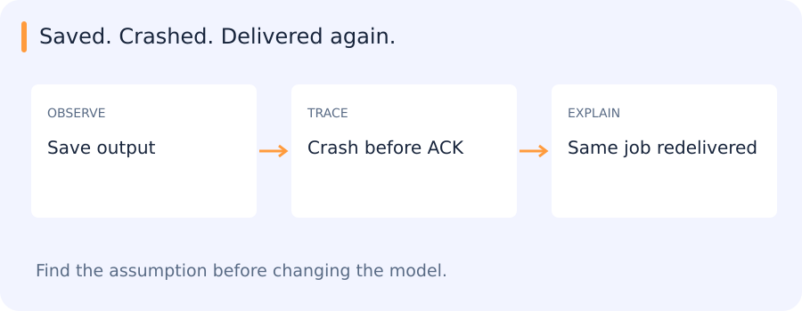

Handling a job that arrives a second time
A worker saves a prediction, then crashes before acknowledging its job. The broker later delivers that job again. Saving first protected the result, but it also left a window in which the same work can be repeated.

A stable job ID lets the system recognize that repeat. The tiny example below stores one result under that identity. A real implementation also needs durable storage, atomic operations and a policy for conflicting outputs; an in-memory dictionary does not provide those guarantees.
outputs = {}
def save_once(job_id, prediction):
return outputs.setdefault(job_id, prediction)
save_once("frame-7", {"cars": 1})
save_once("frame-7", {"cars": 1}) # Redelivery, same identity.
print(len(outputs))This prints:
1HTTP, database transactions and queue acknowledgements each cover a different boundary. Recovery depends on how the application connects them.
Jump to a concept
Requests are explicit interfaces
HTTP connects clients and services through methods, paths, headers and bodies. A request to an inference endpoint needs a defined payload schema, encoding, maximum size and response/error schema. A connection timeout and a read timeout answer different questions. A successful TCP connection does not prove model readiness, and a 200 response does not prove the returned prediction belongs to the submitted image. Validate IDs, shapes and required fields at both ends.
A requests-style client sends data, checks status and parses the body. Do not retry every exception blindly: a timeout can occur after the service already committed work. Retrying then duplicates side effects unless a stable request identity supports idempotency. Authentication, serialization and schema evolution are separate from model quality. Logs should carry request/task IDs without exposing credentials or large sensitive inputs.
SQL and persistent data
A relational table stores rows with declared columns and constraints. A primary key identifies a row; a foreign key expresses a relationship to another table. SELECT filters and projects rows; JOIN combines related tables; GROUP BY aggregates. A many-to-many join can multiply counts, so check cardinality before interpreting a metric. NULL represents missing/unknown information and has different comparison semantics from a normal value. Use parameterized queries rather than building SQL by concatenating untrusted input.
An index can accelerate selected access patterns but costs storage and write work. Query plans reveal what is actually scanned. A transaction groups operations that must succeed or fail together; isolation defines interactions with concurrent changes. Saving a prediction and marking a task complete in separate unprotected operations can leave contradictory state after a crash. Files and a broker may not share a single database transaction, so design recovery using stable IDs and explicit states.
Services, queues and state
A service boundary should expose a meaningful operation with versioned inputs/outputs. Separate pure model prediction from transport and persistence so the same computation can be checked locally and through the actual consumer. A queue buffers jobs; a worker converts jobs into durable outputs. Define retryable errors, terminal errors and how partial results are recognized. A completed job is supported by a saved/reloaded artifact and a consumer check, not simply an in-memory flag.
Research interfaces
A component contract includes data formats, units, label order, supported shapes and relevant numerical behavior. Keep experiment changes within authorized components and compare alternatives on the same held-out population. Preserve checkpoints/configurations and visual evidence for multiple runs so tradeoffs remain inspectable. A single “best” score can conceal better recall at a slightly larger compute cost or a severe failure on one camera.
Connecting the service boundaries
The SAM2 and RabbitMQ assignments give these interfaces a concrete setting: a request becomes model work, an output is persisted and another component consumes it. The archived HTTP/SQL outline did not specify separate exercises. In the active projects, following one result across these boundaries reveals what has actually completed and what could still be repeated after a failure.